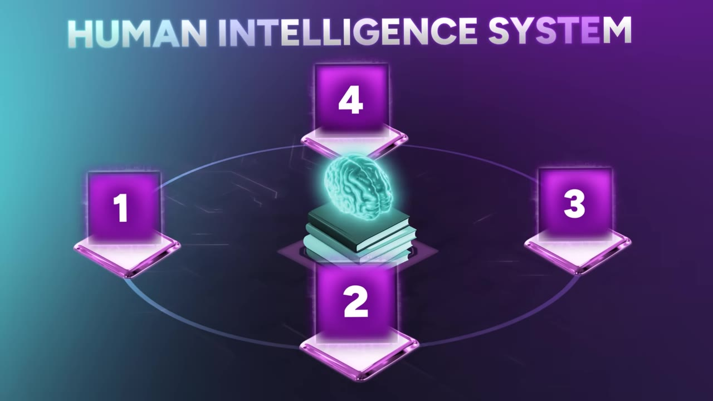
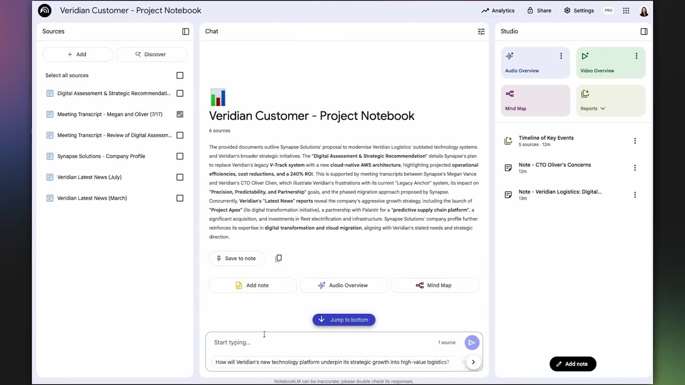
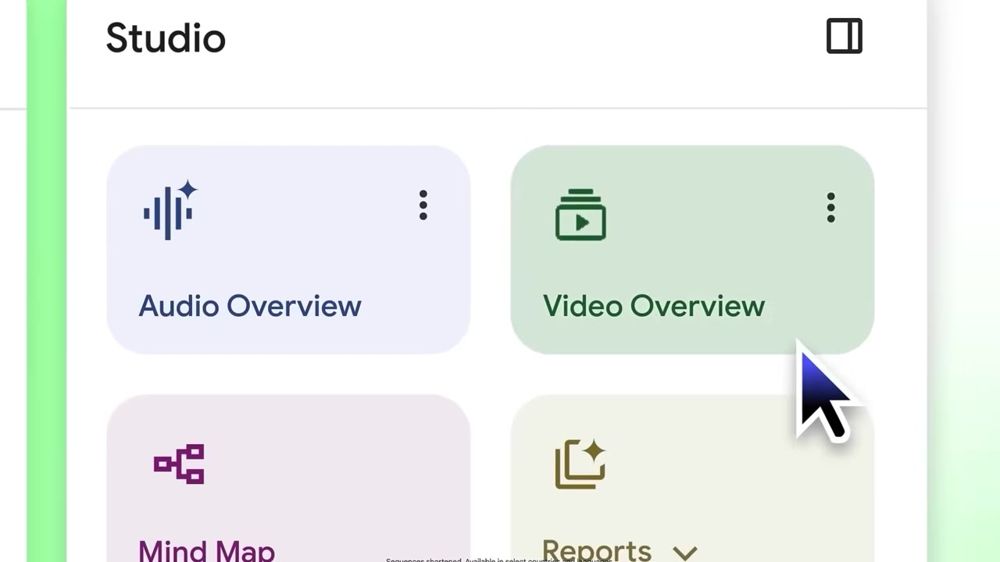
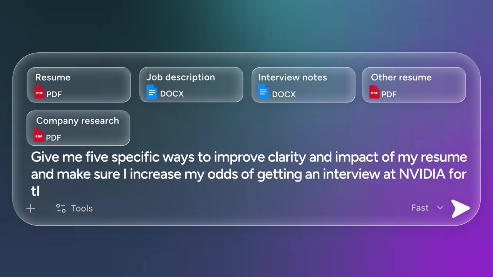
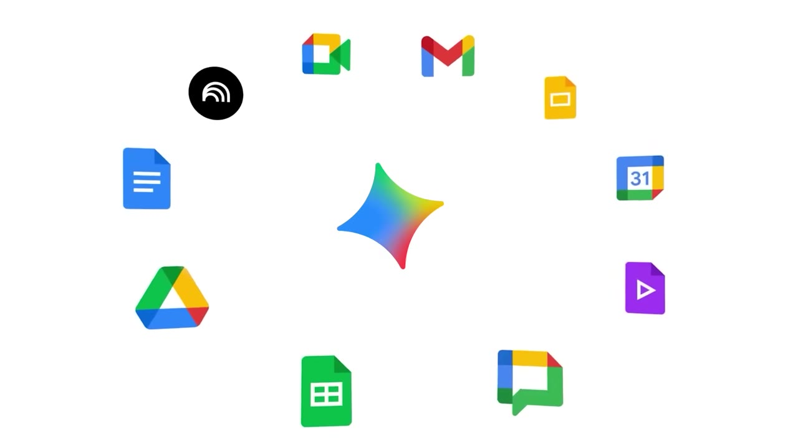

Everyone's fixated on ChatGPT; almost nobody builds a real system with Gemini and NotebookLM. theMITmonk lays out a four-floor "human intelligence system" — grounding, a frontier engine, specialists, and execution — plus the AIM prompt framework that makes it steerable.
Watch on YouTubeEveryone's obsessing over ChatGPT; almost nobody uses Gemini and NotebookLM to build a real edge. After 20 years as a CEO and board member, theMITmonk's view is that the tool is never the advantage — the system you build around it is. Lean on AI to do your thinking and you get "machine fog": an MIT Media Lab study found people relying on AI for writing showed the weakest brain connectivity and recall.

The edge is never the tool. It's the system you build.— theMITmonk
AI has a dangerous habit: it can sound convincing without being accurate — "a brilliant lawyer who argues beautifully while fabricating the evidence." NotebookLM works only from the material you give it — your documents, notes, transcripts, data. Upload a 500-page textbook, the last 6 months of meeting transcripts, or a pile of PDFs, then investigate, ask questions, and find patterns anchored in reality.

NotebookLM does not give you just a response. It gives you the receipt.— theMITmonk
Mastery doesn't come from consuming more information — working memory is tiny, like squeezing a mountain through a straw. Real learning is moving material into long-term memory, and the brain does it through two modes: focus (actively investigating your loaded sources, following the breadcrumbs) and diffuse (away from the desk, where the aha moment lands). NotebookLM serves both: it turns your research and reports into interactive podcasts or debates you can listen to on a walk and even interrupt with questions in real time.

Gemini moves you from evidence to exploration. You can feed 2 million tokens into its active memory at once — nearly the entire Harry Potter series plus the entire Lord of the Rings trilogy, with space left over — so a decade of financial history and thousands of customer call transcripts surface patterns a human eye would take months to spot. But raw capacity without steering only gets you lost faster. The fix is the AIM micro-framework.

tell it who to be ("you're the world's most sought-after resume editor").
feed the real context, not just "fix my resume."
name the exact outcome ("five specific ways to improve clarity and impact… to get an interview at Nvidia").
Generic AI feels like talking to a stranger you just met at a train station — no context about who you are or what you want. A Gem fixes that: give it a role, a tone, a clear objective, and a knowledge base, and it remembers across the entire arc of your work, not just one chat — a writing coach, coding partner, research analyst, brand consultant, chief of staff, devil's advocate. You can also feed a Gem the notebooks you built in NotebookLM.
Gems are not folders. A folder remembers where your files are. A gem remembers who you are, what you care about, and how you think.— theMITmonk
The last problem is fragmentation — too many tools, too many tabs, work scattered across disconnected islands. Research suggests context-switching can eat as much as 40% of your productive time. Gemini inside Google Workspace makes Docs, Gmail, Drive, Calendar, Sheets, and Meet stop acting like isolated islands and behave like one connected environment.

It relieves three pressures. Friction: ask Drive "what are the biggest gaps in my fit?" instead of digging through a file cabinet. Focus: join a Meet 5 minutes late and get a three-bullet catch-up without making the room rewind. Flavor: because it learns from the files in your Drive, it writes with you, not for you.
AI will eliminate some jobs, create many new ones, and reshape almost all of them — but every job has two functions: mechanics and meaning. AI may change the mechanics; it doesn't automatically change or eliminate the meaning.
So the system isn't only about building your edge; it's about building yourself — using it to create something real. As theMITmonk closes, borrowing from Maya Angelou: your worth isn't a number that has to keep growing to prove you matter — you alone are enough.